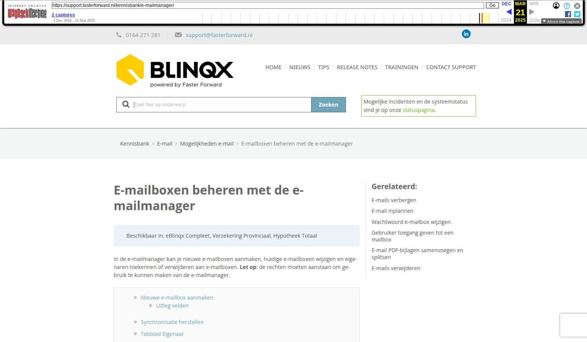

E-mailboxen beheren met de e-mailmanager

Tekstinhoud
E-mailboxen beheren met de e-mailmanager
Beschikbaar in: eBlinqx Compleet, Verzekering Provinciaal, Hypotheek Totaal
In de e-mailmanager kan je nieuwe e-mailboxen aanmaken, huidige e-mailboxen wijzigen en eigenaren toekennen of verwijderen aan e-mailboxen. Let op: de rechten moeten aanstaan om gebruik te kunnen maken van de e-mailmanager.
Nieuwe e-mailbox aanmaken
Uitleg velden
Synchronisatie herstellen
Tabblad Eigenaar
Tabblad Template
Tabblad Automatisch antwoord
Tabblad Beveiliging
Standaard e-mailbox
Nieuwe e-mailbox aanmaken
Ga via Beheer – E-mailmanager naar de e-mailmanager. Klik hier op de '+' om een nieuwe e-mailbox aan te maken. Links vul je de naam en het afzenderadres van de e-mailbox in.
Rechts vul je het type van de e-mailbox en de serverinstellingen in. Jouw e-mailbeheerder levert de serverinstellingen aan.
Indien het een type Office 365 betreft dan hoef je de serverinstellingen niet in te vullen. Vervolgens opslaan.
Uitleg velden
Interval: het automatisch ophalen van de e-mail. Indien deze op 'geen' staat dan wordt de e-mail niet automatisch door eBlinqx opgehaald. Dan kan deze enkel door de 'ophaalknop' in de e-mailmodule opgehaald worden
Uitschakelen na een aantal foutmeldingen: eBlinqx maakt contact met de server. Indien dit niet mogelijk is of de combinatie gebruikersnaam en/of wachtwoord klopt niet dan stopt eBlinqx na het X aantal foutmeldingen met proberen op te halen van de e-mail. De interval wordt dan automatisch op 'geen' gezet. De 'X' kan je aangeven bij 'uitschakelen na een aantal foutmeldingen'.
IMAP verzonden berichten en IMAP ongewenste berichten: om deze te kunnen selecteren dien je eerst op 'IMAP mappen ophalen' te klikken. Hier selecteer je de map, waarin op de e-mailserver de ongewenste e-mail en verzonden e-mail terecht komt.
Synchronisatie herstellen
Indien je de juiste rechten hebt, kan je de synchronisatie opnieuw instellen. Dit kan je toepassen als er e-mails op de mailserver staan die niet door eBlinqx zijn opgehaald en je deze toch nog wilt binnenhalen. Onder 'Synchronisatie herstellen' kan je een nieuwe synchronisatiedatum invoeren, akkoord aanvinken en opslaan. Met deze nieuwe synchronisatiedatum kan je e-mails vanaf een bepaalde datum en tijd ophalen van de mailserver. Alleen de e-mails die nog niet eerder zijn binnengekomen worden opgehaald. Deze e-mailberichten krijgen de ontvangstdatum van het moment van ophalen.
Tabblad Eigenaar
Hier kan je gebruikers toegang geven tot de e-mailbox of de toegang tot de e-mailbox intrekken. Om gebruikers toe te voegen klik je eerst op de blauwe pijl om de organisatie op te zoeken waar de gebruiker aan gekoppeld is. Door op grijze pijl achter de gebruiker te klikken, voeg je deze persoon toe aan de e-mailbox.
Rechts staan alle personen die toegang hebben tot de e-mailbox. Door op het rode kruisje achter de gebruiker te klikken, ontkoppel je de gebruiker van de e-mailbox.
Ook is het mogelijk om een volledige workflowgroep te koppelen aan de e-mailbox. Dit door op het grijze pijltje achter de workflowgroep te klikken. Iedereen die in de betreffende workflowgroep zit kan de e-mailbox dan inzien. Het toevoegen van workflowgroepen is alleen mogelijk indien je 'multi-user' rechten hebt. Dit zijn vaak de interne beheerders van een organisatie.
Tabblad Template
Hier kan je een standaardlettertype voor de e-mails instellen. Hier lees je daar meer over.
Tabblad Automatisch antwoord
In dit tabblad kan je het Automatisch antwoord instellen. Lees er hier meer over.
Tabblad Beveiliging
Tegenwoordig wordt de beveiliging omtrent e-mails ontvangen steeds strenger. Hierdoor is het belangrijk dat SPF, DKIM en DMARC correct staan ingesteld. In het tabblad Beveiliging kan je dit controleren. Indien deze niet correct staan ingesteld, neem dan contact op met jouw ICT-beheerder.
Standaard e-mailbox
Onder jouw gebruikersaccount is het mogelijk om een standaard e-mailbox in te stellen. Dit kan je doen via het poppetje rechts bovenin – mijn instellingen – standaard e-mailbox. Indien je een nieuwe e-mailbox hebt aangemaakt en je deze als standaard e-mailbox wilt hebben dan dien je deze daar in te stellen. Indien er geen standaard e-mailbox onder je account is ingesteld dan zie je bij het icoon (envelop) van de e-mailmodule een rood uitroepteken staan.
Laatste update: 2 juli 2024
Tagged: e-mail, e-mailbox
Was deze informatie nuttig?
Ja Nee